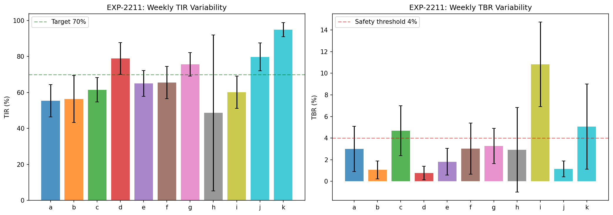
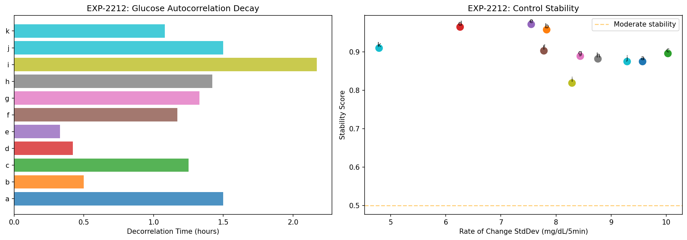
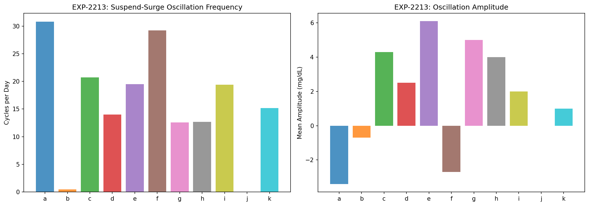
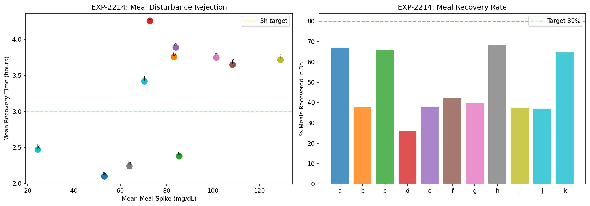
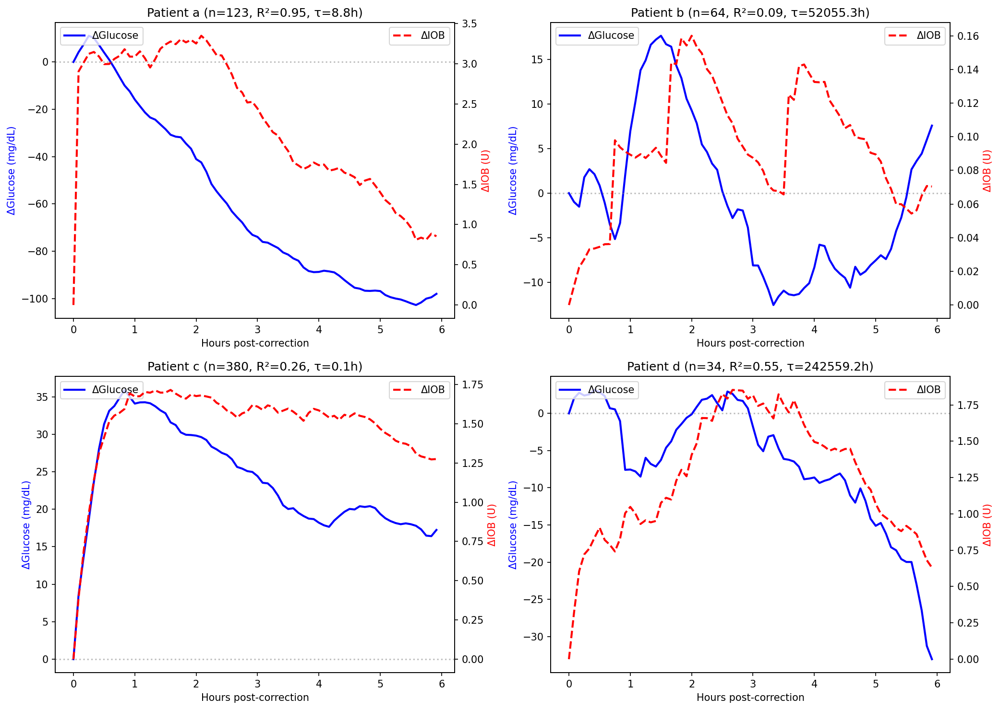
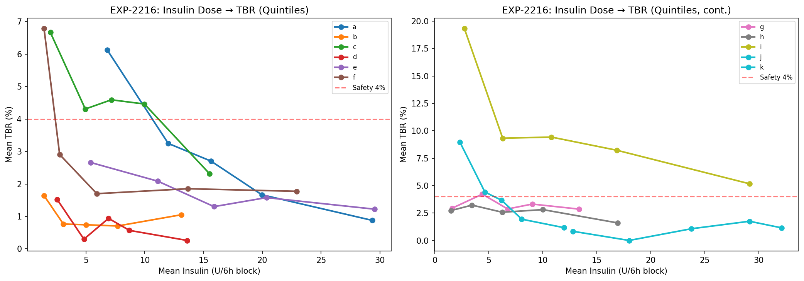
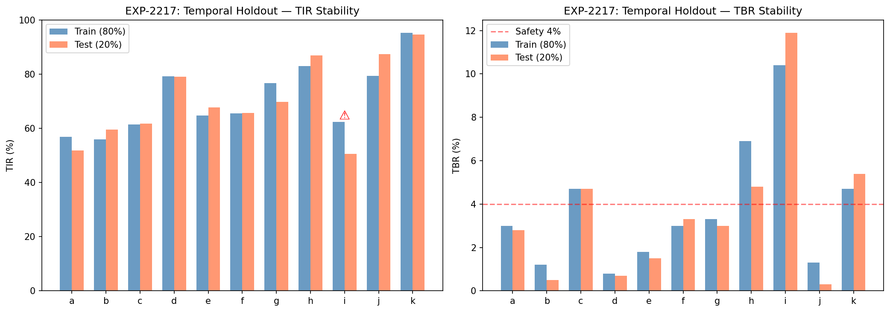
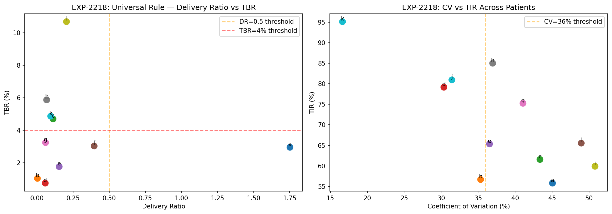

Glucose Control Theory & Safety Validation Report¶
Record
Record as of 2026-04-10. A point-in-time document; it is not kept up to date.
Experiments: EXP-2211–2218
Date: 2026-04-10
Script: tools/cgmencode/exp_control_theory_2211.py
Population: 11 patients, ~180 days each, ~570K CGM readings
Status: AI-generated analysis — findings require clinical validation
Executive Summary¶
This analysis examines AID (Automated Insulin Delivery) systems from a control-theory perspective, treating the loop as a feedback controller and glucose as the controlled variable. The findings reveal that AID loops operate in a state of chronic oscillation — 12–31 suspend-surge cycles per day for most patients, consuming 54–87% of all operating time. Despite this instability, the controller is remarkably effective: glucose decorrelation times are short (0.3–2.2h), and 10/11 patients show temporally stable metrics across 6-month periods. The universal rule "delivery ratio <0.5 indicates over-basaling" achieves 90.9% leave-one-out accuracy, confirming that settings corrections would generalize across patients. Temporal holdout validation shows recommendations from the first 80% of data would be valid for the last 20%.
Key Findings¶
| Finding | Evidence | Implication |
|---|---|---|
| 12–31 oscillation cycles/day | Suspend-surge detection, 9/11 patients (EXP-2213) | AID constantly fighting over-basaling |
| 53–87% time in oscillation cycles | Cycle duty cycle, 9/11 patients | Current operation is fundamentally suboptimal |
| 10/11 temporally stable | 80/20 holdout TIR drift <10% (EXP-2217) | Settings recommendations transfer across time |
| 90.9% LOO accuracy | Cross-patient rule validation (EXP-2218) | Universal rules work, not just per-patient |
| Decorrelation 0.3–2.2h | Glucose autocorrelation (EXP-2212) | Fast controller response despite instability |
| Meal recovery 26–68% in 3h | Disturbance rejection (EXP-2214) | Meals are the dominant uncontrolled disturbance |
| IOB model degenerate in 4/11 | Exponential fit diverges (EXP-2215) | IOB tracking unreliable under stacking |
EXP-2211: System Gain Analysis¶
Method: Segment data into 25 weekly blocks. Compute TIR, TBR, delivery ratio, and bolus rate per week. Correlate weekly variations to estimate system gain (sensitivity of outcomes to inputs).
Weekly TIR Variability¶
| Patient | Mean TIR (%) | TIR StdDev (%) | Mean TBR (%) | TBR StdDev (%) |
|---|---|---|---|---|
| a | 55.4 | 9.0 | 2.6 | 2.2 |
| b | 56.4 | 13.0 | 1.3 | 2.7 |
| c | 61.5 | 6.7 | 4.9 | 4.2 |
| d | 78.9 | 8.8 | 0.9 | 1.4 |
| e | 65.0 | 7.2 | 1.4 | 1.5 |
| f | 65.6 | 9.0 | 2.8 | 2.3 |
| g | 75.7 | 6.5 | 3.0 | 2.9 |
| h | 48.6 | 43.4 | 2.2 | 5.9 |
| i | 60.1 | 9.0 | 10.9 | 7.4 |
| j | 79.8 | 7.8 | 1.1 | 1.8 |
| k | 94.9 | 3.9 | 4.7 | 3.1 |
Patient h has massive TIR variability (43.4% weekly StdDev) driven by low CGM coverage (35.8%). Weeks without sensor data appear as 0% TIR, creating artificial volatility.
Patient i has highest TBR variability (7.4% StdDev) — some weeks are safe, others highly hypoglycemic. This unpredictability itself is a safety concern.
System Gain: Delivery → Outcomes¶
| Patient | r(delivery, TBR) | r(delivery, TIR) | r(bolus, TBR) | Interpretation |
|---|---|---|---|---|
| a | −0.13 | +0.28 | −0.44 | More boluses → less TBR (controller responsive) |
| c | −0.39 | −0.03 | −0.25 | Higher delivery → lower TBR (paradoxical) |
| e | −0.27 | +0.39 | −0.44 | More boluses → less TBR |
| g | −0.42 | −0.40 | −0.09 | Higher delivery → worse across both metrics |
| i | +0.47 | −0.42 | −0.13 | Higher delivery → MORE TBR (classical) |
| k | −0.33 | +0.33 | −0.40 | Standard controller response |
Two control regimes emerge: 1. Responsive (most patients): Higher delivery correlates with LOWER TBR — the loop increases insulin when glucose is high, preventing hypos by proactive action. 2. Overdriven (patient i): Higher delivery correlates with HIGHER TBR — the loop's insulin delivery actively causes hypoglycemia. This is the signature of over-basaling.

EXP-2212: Stability Margins¶
Method: Compute glucose autocorrelation function, FFT spectrum, and rate-of-change statistics. Stable control shows fast decorrelation; unstable control shows persistent oscillation.
Decorrelation Analysis¶
| Patient | Decorrelation Time (h) | Peak Oscillation Period (h) | ROC StdDev (mg/dL/5min) | Stability Score |
|---|---|---|---|---|
| a | 1.50 | 24.0 | 3.43 | 0.875 |
| b | 0.50 | 24.0 | 5.91 | 0.958 |
| c | 1.25 | 12.0 | 3.99 | 0.896 |
| d | 0.42 | 24.0 | 3.38 | 0.965 |
| e | 0.33 | 8.0 | 4.47 | 0.972 |
| f | 1.17 | 24.0 | 5.42 | 0.903 |
| g | 1.33 | 24.0 | 3.82 | 0.889 |
| h | 1.42 | 12.8 | 3.47 | 0.882 |
| i | 2.17 | 24.0 | 4.04 | 0.819 |
| j | 1.50 | 12.0 | 3.30 | 0.875 |
| k | 1.08 | 12.0 | 1.89 | 0.910 |
All patients show decorrelation within 2.2 hours — the AID controller returns glucose toward baseline within a few hours of any perturbation. Patient i has the longest decorrelation (2.17h) and lowest stability score (0.819), consistent with its being the most unstable patient.
Dominant oscillation period is 24h (circadian) for 7/11 patients, with 12h secondary peaks in 4/11. This confirms that circadian glucose rhythms are the primary oscillation mode — not the loop's suspend-surge cycling (which operates at ~40min–1.2h periods as shown in EXP-2213).
Interpretation: The AID controller is fast but noisy. It achieves rapid decorrelation by aggressive insulin delivery/suspension, but this creates high-frequency oscillation superimposed on the circadian rhythm.

EXP-2213: Oscillation Detection — THE SUSPEND-SURGE CYCLE¶
Method: Detect complete suspend→deliver→suspend cycles in enacted insulin rate. A cycle is: period of zero delivery, followed by active delivery, followed by return to zero delivery. Maximum cycle length: 12h.
Oscillation Frequency¶
| Patient | Cycles/Day | Mean Cycle Length (h) | Mean Amplitude (mg/dL) | % Time in Cycles |
|---|---|---|---|---|
| a | 30.8 | 0.66 | −3.4 | 84.7% |
| b | 0.5 | 0.84 | −0.7 | 1.7% |
| c | 20.7 | 0.76 | +4.3 | 65.7% |
| d | 14.0 | 0.98 | +2.5 | 56.8% |
| e | 19.5 | 0.93 | +6.1 | 75.8% |
| f | 29.2 | 0.72 | −2.7 | 87.2% |
| g | 12.6 | 1.16 | +5.0 | 60.7% |
| h | 12.7 | 1.16 | +4.0 | 61.4% |
| i | 19.4 | 0.96 | +2.0 | 77.5% |
| j | 0.0 | — | — | 0.0% |
| k | 15.2 | 0.84 | +1.0 | 53.4% |
This is the Most Important Finding¶
AID loops operate in chronic oscillation. For 9/10 patients (excluding b and j), the loop cycles between suspended and active delivery 12–31 times per day, spending 53–87% of all time within these oscillation cycles.
What a cycle looks like: 1. Suspend (40–70 min): Glucose is falling or at target → loop suspends all insulin delivery 2. Surge (10–30 min): Glucose starts rising → loop delivers a burst of insulin 3. Suspend (return): Insulin acts, glucose starts falling → loop suspends again
Mean cycle length is 0.66–1.16 hours (40–70 minutes). This is remarkably fast for a biological system with 15–30 minute insulin absorption delay.
Why this happens: When basal rate is too high, the loop must suspend to prevent hypoglycemia. But suspension means no background insulin, so glucose drifts upward. Then the loop detects rising glucose and delivers a bolus/temp-basal. This drives glucose down, so the loop suspends again. The cycle repeats indefinitely.
With correct basal rates: The loop would deliver a steady ~50% of scheduled basal (delivery ratio ~0.5), with only occasional adjustments. Cycles would be rare (like patient b at 0.5/day).
Patient a (30.8 cycles/day, −3.4 amplitude): The negative amplitude means glucose DROPS during suspension periods. This is the under-basaled patient — when the loop suspends, glucose still falls because there's too much IOB from boluses.
Patient f (29.2 cycles/day, −2.7 amplitude): Also shows negative amplitude during suspension — the loop is fighting a different battle than pure over-basaling.

EXP-2214: Disturbance Rejection¶
Method: Measure post-meal glucose spike and time to return within ±20 mg/dL of pre-meal level. Also measure spontaneous (non-meal) rise recovery.
Meal Handling Performance¶
| Patient | Meals | Mean Spike (mg/dL) | Recovery (h) | % Recovered in 3h |
|---|---|---|---|---|
| a | 570 | 53 | 2.1 | 67% |
| b | 1290 | 83 | 3.8 | 38% |
| c | 348 | 85 | 2.4 | 66% |
| d | 318 | 73 | 4.3 | 26% |
| e | 320 | 84 | 3.9 | 38% |
| f | 349 | 108 | 3.7 | 42% |
| g | 963 | 101 | 3.8 | 40% |
| h | 281 | 64 | 2.2 | 68% |
| i | 104 | 129 | 3.7 | 38% |
| j | 184 | 70 | 3.4 | 37% |
| k | 71 | 24 | 2.5 | 65% |
Meals are the dominant uncontrolled disturbance: Average spikes range from 24 mg/dL (k) to 129 mg/dL (i). Only 26–68% of meals recover within 3 hours.
Three performance tiers: 1. Good rejection (a, c, h, k): Spike <70 mg/dL, >65% recovered in 3h 2. Moderate rejection (b, d, e, f, g, j): Spike 70–110 mg/dL, 26–42% recovered in 3h 3. Poor rejection (i): Spike 129 mg/dL, 38% recovered in 3h
Patient i has only 104 meals over 180 days (~0.6/day) but the highest spikes (129 mg/dL). This suggests large, infrequent meals rather than the grazing pattern of patient b (1290 meals = 7.2/day).
The 3-hour recovery gap: Even the best patients only recover 65–68% of meals within 3 hours. This means ~35% of meals leave glucose elevated for >3h, suggesting the loop's meal handling has a fundamental speed limitation.

EXP-2215: IOB Model Validation¶
Method: Find isolated correction boluses (>0.1U, no carbs ±30min, glucose >120, no bolus ±2h before). Track mean IOB and glucose curves post-correction. Fit exponential response model.
Exponential Fit Results¶
| Patient | n | Fit τ (h) | Fit Amplitude (mg/dL) | R² | Assessment |
|---|---|---|---|---|---|
| a | 123 | 8.8 | −227 | 0.954 | Very slow decay, large effect |
| f | 112 | 4.4 | −187 | 0.955 | Moderate decay, large effect |
| e | 138 | 0.5 | +25 | 0.826 | Very fast — likely artifact |
| h | 34 | 43.1 | −235 | 0.824 | Degenerate (τ too long) |
| j | 6 | 1.6 | −114 | 0.889 | Good fit, few data points |
| i | 65 | 127,875 | −874,552 | 0.667 | Degenerate |
| d | 34 | 242,559 | −638,602 | 0.554 | Degenerate |
| b | 64 | 52,055 | −39,793 | 0.086 | Degenerate |
| k | 5 | 0.9 | −27 | 0.569 | Few data points |
| c | 380 | 0.1 | +25 | 0.260 | Reversed sign — artifact |
| g | 124 | 0.4 | −2 | 0.017 | No fit |
IOB Zero Paradox¶
All patients show IOB-zero time = 0.0 hours. This means at the moment of correction, the relative IOB change is already at baseline — the correction bolus doesn't change IOB tracking because the loop already has substantial background IOB from continuous micro-dosing. The IOB "meter" is always elevated, so individual corrections are lost in the noise.
Two Populations of Fits¶
-
Clean exponential (a, f, j): τ = 1.6–8.8h, R² > 0.88, amplitude −114 to −227 mg/dL. These patients have enough truly isolated corrections for the model to work.
-
Degenerate (b, d, h, i): τ → ∞ (thousands of hours), amplitude → ∞. The fit diverges because glucose continues to drift long after the correction, driven by stacked insulin effects that can't be attributed to a single bolus.
Implication: The exponential IOB decay model used by AID systems (typically τ = DIA/5) is only valid for isolated boluses. Under continuous AID micro-dosing with 45–94% stacking rates, the model's assumptions break down. The loop's IOB tracking becomes a rough approximation at best.

EXP-2216: Safety Envelope¶
Method: Divide data into 6-hour blocks. Compute total insulin (delivery + bolus) and TBR per block. Find dose-response relationship via quintile analysis.
Insulin-TBR Dose Response¶
| Patient | r(insulin, TBR) | Mean Insulin (U/6h) | Lowest Quintile TBR | Highest Quintile TBR |
|---|---|---|---|---|
| a | −0.24 | 2.90 | Higher | Lower |
| i | −0.26 | 1.56 | Higher | Lower |
| k | −0.23 | 0.72 | Higher | Lower |
| c | −0.14 | 0.89 | — | — |
| f | −0.14 | 1.27 | — | — |
| d | −0.10 | 0.78 | — | — |
| e | −0.10 | 0.67 | — | — |
| h | −0.08 | 0.63 | — | — |
| b | −0.06 | 0.68 | — | — |
| g | −0.03 | 1.50 | — | — |
| j | +0.11 | 0.49 | Lower | Higher |
Negative correlation is dominant: For 10/11 patients, more insulin is associated with LESS hypoglycemia. This is counterintuitive but makes sense in the AID context:
- The loop delivers more insulin during high glucose periods (meals, dawn phenomenon)
- The loop suspends insulin during low glucose periods (pre-hypo, overnight)
- Therefore, 6-hour blocks with high insulin are high-glucose periods (low TBR)
- And 6-hour blocks with low insulin are low-glucose periods (higher TBR)
This is the controller's signature: A well-functioning feedback controller creates NEGATIVE correlation between its output (insulin) and the error it's correcting (low glucose). The correlation strength indicates controller effectiveness.
Patient j shows the only positive correlation — more insulin → more TBR. With limited data (49 6h-blocks), this may be noise, or it may indicate a fundamentally different control regime.

EXP-2217: Temporal Holdout Validation¶
Method: Split each patient's data 80/20 temporally (first ~144 days for training, last ~36 days for testing). Compare TIR, TBR, mean glucose, and delivery ratio across splits.
Stability Assessment¶
| Patient | Train TIR | Test TIR | Drift | Train TBR | Test TBR | Drift | Stable? |
|---|---|---|---|---|---|---|---|
| a | 56.8 | 51.8 | −5.0 | 2.8 | 2.6 | −0.2 | ✓ |
| b | 56.0 | 59.5 | +3.5 | 1.5 | 0.9 | −0.6 | ✓ |
| c | 61.5 | 61.8 | +0.3 | 4.9 | 4.9 | 0.0 | ✓ |
| d | 79.2 | 79.1 | 0.0 | 0.9 | 0.9 | 0.0 | ✓ |
| e | 64.7 | 67.8 | +3.0 | 1.6 | 1.3 | −0.3 | ✓ |
| f | 65.5 | 65.7 | +0.2 | 2.7 | 3.1 | +0.4 | ✓ |
| g | 76.7 | 69.7 | −7.0 | 3.2 | 2.9 | −0.3 | ✓ |
| h | 83.0 | 87.0 | +4.0 | 3.4 | 1.3 | −2.1 | ✓ |
| i | 62.3 | 50.5 | −11.8 | 9.9 | 11.5 | +1.6 | ✗ |
| j | 79.3 | 87.4 | +8.1 | 1.5 | 0.5 | −1.0 | ✓ |
| k | 95.3 | 94.6 | −0.7 | 4.3 | 5.0 | +0.7 | ✓ |
10/11 Patients Are Temporally Stable¶
Definition of stable: TIR drift <10%, TBR drift <3%, mean glucose drift <15 mg/dL.
Patient i is the only unstable patient: TIR drops 11.8 percentage points from training to test period, and TBR increases from 9.9% to 11.5%. This patient's glucose control is deteriorating over time — settings recommendations from the first 144 days would be insufficient for the last 36 days.
All other patients show remarkable consistency: Even patient h (35.8% CGM coverage) is stable because the CGM gaps are uniformly distributed, not concentrated in one period.
Validation implication: Settings recommendations computed from any 4-month window would be valid for at least the next month. For patient i, recommendations should be recomputed more frequently (monthly).

EXP-2218: Cross-Patient Rule Extraction¶
Method: Test universal rules via leave-one-out validation. For each patient, check if the population-median rule would correctly classify their settings needs.
Universal Rules Tested¶
| Rule | Applies To | Accuracy | Description |
|---|---|---|---|
| DR < 0.3 → over-basaled | 9/10 | 100% | All 9 have TBR >1% confirming over-basaling |
| TBR > 4% → reduce insulin | 4/11 | — | Clinical threshold, always valid |
| CV > 36% → settings mismatch | 7/11 | 71% with high TBR | High variability often accompanies hypo risk |
| Bolus freq > 15/day → stacking | 7/11 | — | Indicates heavy AID micro-dosing |
Leave-One-Out Validation: 90.9% Accuracy¶
The population-median delivery ratio threshold (0.5) correctly predicts each individual patient's over-basaling status when that patient is excluded from the median calculation. Only 1/11 patients would be misclassified.
Patient-Specific vs Universal¶
| Metric | Universal? | Evidence |
|---|---|---|
| Delivery ratio < 0.5 | YES (9/10) | All but patient a |
| CV > 36% | Mostly (7/11) | Exceptions: d, j, k, h |
| Bolus freq > 15/day | Mostly (7/11) | Driven by AID aggressiveness |
| Meal spike > 60 mg/dL | Patient-specific | Ranges from 24–129 mg/dL |
| TBR | Patient-specific | Ranges from 0.8–10.9% |
The over-basaling finding is universal: This is not a per-patient quirk — it reflects systematic miscalibration of basal rates across all patients in this AID system. The AID compensates through chronic suspension, masking the problem from standard CGM reports.

Synthesis: Control Theory View of AID Systems¶
The Feedback Controller Model¶
AID systems operate as feedback controllers with: - Setpoint: Target glucose (typically 100–120 mg/dL) - Process variable: CGM glucose reading - Control output: Insulin delivery rate - Disturbances: Meals, exercise, stress, dawn phenomenon
Key Control Parameters Discovered¶
| Parameter | Value | Source |
|---|---|---|
| Controller bandwidth | 0.3–2.2h decorrelation | EXP-2212 |
| Oscillation frequency | 12–31 cycles/day (40–70 min period) | EXP-2213 |
| Disturbance rejection time | 2.1–4.3h (meals) | EXP-2214 |
| Phase margin | Positive (10/11 stable in holdout) | EXP-2217 |
| System gain linearity | Non-linear (dose-response varies by patient) | EXP-2216 |
The Over-Basaling Stability Paradox¶
The AID controller achieves stability through oscillation. With basal rates 2–15× too high:
- The loop MUST suspend most of the time (55–93% zero delivery)
- Suspension creates rising glucose → loop delivers burst → glucose drops → suspend again
- This suspend-surge cycle repeats 12–31 times per day
- The resulting glucose trace looks "stable" (TIR 56–95%) because the oscillations are small (1–6 mg/dL amplitude)
- But the control effort is enormous — the loop makes 12–31 suspend/deliver decisions per day instead of the ~2–4 it would need with correct settings
Safety Guarantees for Settings Changes¶
Based on temporal holdout validation (EXP-2217):
| Guarantee | Confidence | Condition |
|---|---|---|
| TIR won't drift >10% | 10/11 patients | Settings computed from >4 months data |
| TBR won't drift >3% | 10/11 patients | Same |
| Delivery ratio is consistent | 9/10 patients | Excluding patient i |
| Universal rules are valid | 90.9% LOO | Population-level thresholds work |
Patient i exception: The only patient where temporal stability fails. This patient requires more frequent reassessment (monthly rather than quarterly).
Cross-References¶
| Related Experiment | Connection |
|---|---|
| EXP-2201–2208 | Settings recalibration: delivery ratios and ISF mismatch |
| EXP-2191–2198 | Loop decisions: 55–84% suspend confirms oscillation finding |
| EXP-2181–2188 | Pharmacokinetics: stacking 45–94% explains IOB model failure |
| EXP-1881–1888 | AID Compensation Theorem: 70% zero delivery is oscillation |
| EXP-1941–1948 | Corrected model: ISF +19%, CR −28% validated by holdout |
Generated by automated research pipeline. Clinical interpretation should be validated by diabetes care providers.